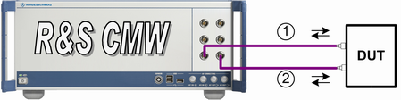

Test Setup for Dual Carrier Scenarios
A test setup for a connection with dual carrier involves one or two uplink and two downlink signals.
For the tests within a single band, the two downlink/uplink carriers can be routed via only one TX/RX module. For the limitations, refer to "Output Power (Ior)". The test setup is identical with the "Test Setup for Standard Cell Scenario".
It is also possible to route the two downlink/uplink signals via different TX/RX modules. This test setup is mandatory for multi-band operation, scenarios with fading and Rx diversity.
Depending on the instrument hardware and the UE connectors, you can use one or two connectors at the UE. Many UEs provide several connectors, but only one of them can be used for WCDMA.
Typical setups using two Tx/Rx paths:
- The UE uses only one connector for WCDMA
Use a bidirectional RF connector for the first downlink and uplink signal and a separate RF connector for the second downlink and if used also for the second uplink signal. Connect both RF connectors to an external combiner and connect the combiner to the UE. - The UE uses two connectors for WCDMA
Use a bidirectional connector for the first downlink and uplink signal. Connect it to the first antenna of the UE. Use an additional connector for the second downlink and if used also for the second uplink signal. Connect it to the second antenna of the UE.
The following figure illustrates this example.

Test setup using two connectors at instrument side and UE side
1 = downlink of the carrier one (DL1) and all uplink signals to the first antenna of the UE
2 = DL2 and alternatively if necessary also UL2 to the second antenna of the UE